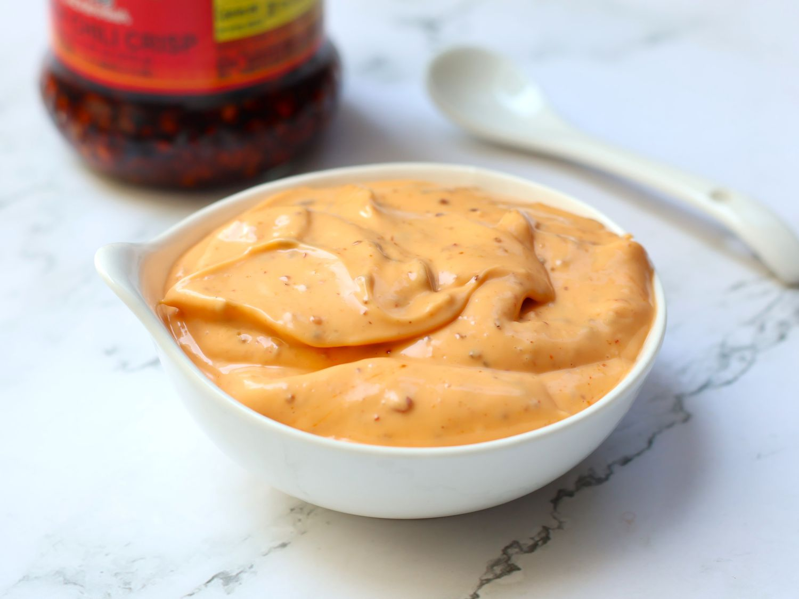

Chilli Crisp Mayo

Description
This Chili Crisp Mayo blends creamy mayonnaise with crunchy, spicy chili oil for a bold and savory kick.
It's perfect as a dip, sandwich spread, or a flavorful topping for fries and rice bowls.
Ingredients
- 2/3 cup mayonnaise
- 1 tablespoon spicy chilli crisp, such as Lao Gan Ma
Steps
- Place mayonnaise and chili crisp into the bowl of a mini food processor.
- Blend until smooth and evenly combined, scraping down the sides of the bowl. Alternately, you can stir the mayonnaise and chili crisp together in a bowl.